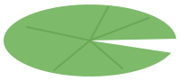

Flies 0
Time 30
Best 0

Hungry frog
Time's up!
You caught 0 flies.

Click or tap anywhere to shoot the frog's tongue. Catch as many flies as you can in 30 seconds.
Flies 0
Time 30
Best 0

You caught 0 flies.